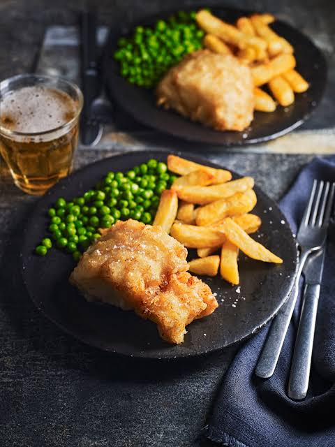
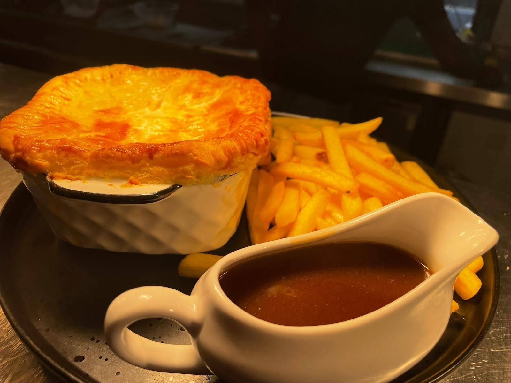
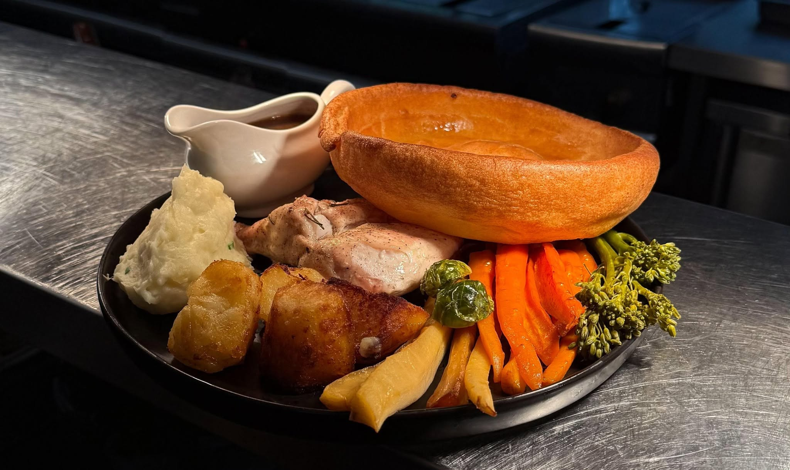
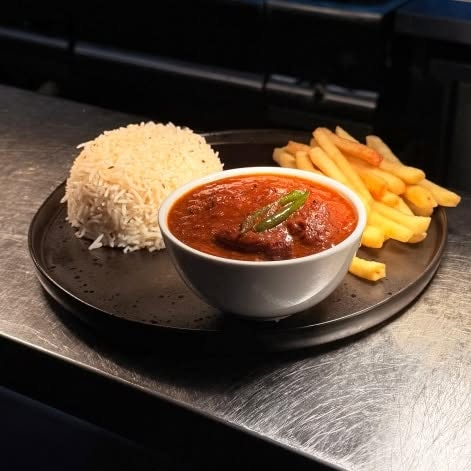
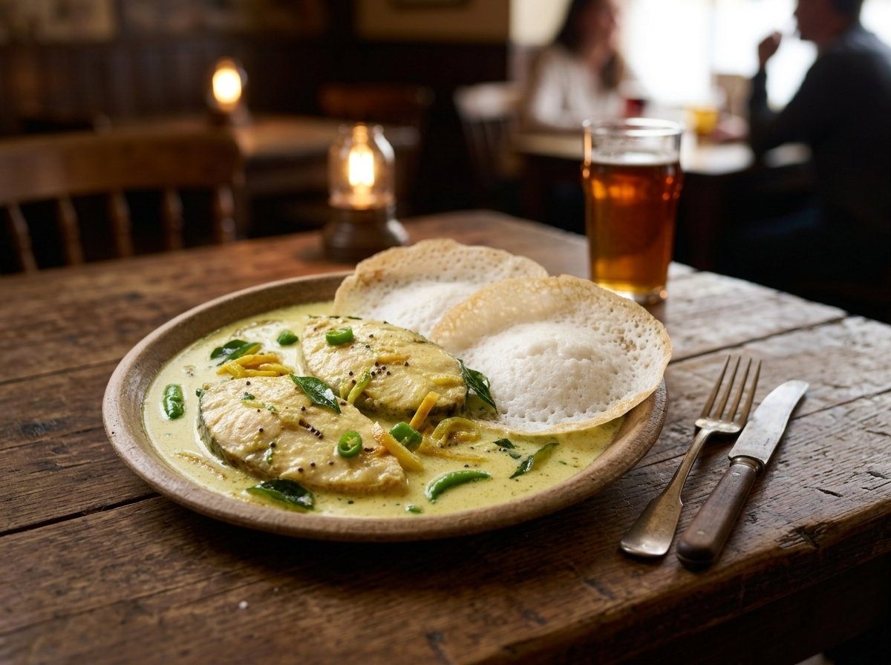

Traditional Pub Classics
Hearty, familiar dishes that belong in a proper British pub.
- Beer-battered Fish & Chips
- Steak & Ale Pie
- Sausage & Mash
- Sunday Roast
- Classic pub starters, sides and burgers
Good pub food, authentic South Indian curries, dishes and breads, draught beer and a warm welcome beside the water.
Ye Olde No. 3 is a traditional pub in Little Bollington, beside the Bridgewater Canal. It is a place for a pint, a meal, a Sunday roast, a canal-side walk or simply a warm welcome.
What makes the pub different is the food. Alongside traditional English pub favourites, the kitchen serves authentic South Indian curries, regional dishes and traditional breads. The two traditions are not presented as a gimmick or a generic fusion menu — each has its own identity.
The character of Ye Olde No. 3 suits a broad mix of customers and occasions.
Hearty, familiar dishes that belong in a proper British pub.
Curries, regional dishes and traditional breads with the flavours of South India and Kerala.
Prices are kept on the dedicated menu page. This homepage section is about discovering what makes the food worth coming for.

A quintessential British pub favourite and one of the dishes that best represents the traditional side of Ye Olde No. 3.

Hearty, comforting and unmistakably traditional — a natural hero dish for the pub's heritage character.

Roast meats, crispy potatoes, Yorkshire pudding, vegetables, cauliflower cheese and rich homemade stock gravy.

A South Indian classic with tender chicken, freshly ground spices, red chilli and coconut milk.

A mild, creamy fish preparation with coconut milk, served with traditional appam.

Tender beef in a South Indian-style sauce with roasted whole spices, curry leaves and coconut.
Canal-side seating, the bar, and a few plates from the kitchen.


Nestled along Lymm Road in Little Bollington, Ye Olde No. 3 carries a unique name deeply rooted in the history of local transport and trade along two major historic arteries: the Bridgewater Canal and the Manchester-to-Chester turnpike route.
Original Beginnings & The Red Lion
In the 19th century, the pub originally opened its doors under the traditional name The Red Lion. Situated directly where land and water transport met, the inn quickly became an essential resting place for travelers, drovers, bargemen, and drivers.
The Canal Water Point & Horse Exchange
As horse-drawn narrowboat traffic surged along the newly constructed Bridgewater Canal, the waterway established designated resting and horse-watering posts at regular intervals. This site was designated as the third official watering and changing stop along that stretch from its origin. Canal workers routinely referred to the tavern by its post identifier ("Number 3"). Over time, the pub officially embraced the nickname, adding "Ye Olde" to honor its canal-side heritage.
The Stagecoach & Turnpike Connection
Beyond its canal links, the pub sat along the primary turnpike road used by stagecoaches traveling between Manchester and Chester. Stagecoach horses required replacing at scheduled intervals to maintain travel speed, and local folklore holds that the inn served as the 3rd official staging post out of Manchester to swap tired teams for fresh horses and allow passengers a brief respite.
Today, whether you are stopping by from the canal towpath or traveling down Lymm Road, Ye Olde No. 3 remains a historic sanctuary for modern travelers, serving traditional British pub favorites alongside authentic South Indian cuisine.
Local History & Canal HeritageHave a question about table reservations, party bookings, or our dual English & South Indian menu? We’d love to hear from you.
Ye Olde No. 3
Lymm Road
Little Bollington
Cheshire, WA14 4TA
Situated right beside the historic Bridgewater Canal, close to Dunham Massey, Altrincham, and Lymm.
Open every day except Tuesday. Kitchen and bar hours below — please call ahead on Bank Holidays to confirm.
| Sunday | 12:00 – 22:00 |
| Monday | 12:00 – 22:00 |
| Tuesday | Closed |
| Wednesday | 12:00 – 22:00 |
| Thursday | 12:00 – 22:00 |
| Friday | 12:00 – 22:00 |
| Saturday | 12:00 – 22:00 |
Sunday Roast served from 12pm until it's gone. We're open on Bank Holidays and other UK special days — please call to confirm.
Ye Olde No. 3 is at Lymm Road, Little Bollington, WA14 4TA, beside the Bridgewater Canal and close to Dunham Massey, Altrincham and Lymm.
Ye Olde No.3
Lymm Road
Little Bollington
WA14 4TA
Tel: +44 1925 756287
Yes — our menu features classic British pub dishes alongside authentic South Indian curries, rice and breads, each cooked as its own tradition rather than a fusion menu.
Yes, we're open on Bank Holidays and other UK special occasions. Please call ahead to confirm hours on the day.
Yes, our Sunday Roast is served every Sunday from 12pm until it's gone. Booking is recommended.
Yes, well-behaved dogs are very welcome in the pub.
Yes, we have a pool table on-site.
Book a table for a pint and a pie, an authentic South Indian spread, Sunday roast — or order online for delivery & collection.
No 3 Pubs UK Limited ("we", "us") is committed to protecting your privacy. We collect only the information you choose to share with us — for example, when you contact us by phone or email, or make a booking through our online partners. We do not sell your data to third parties.
This site may use cookies and analytics tools (such as Google Analytics) to understand how visitors use the site, purely to help us improve it. You can control or delete cookies through your browser settings at any time.
For any questions about how your data is handled, or to request its removal, please email us at no3yeolde@gmail.com.